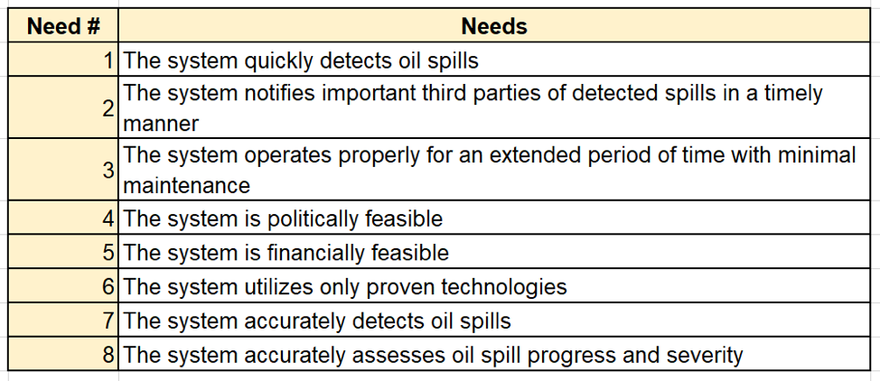
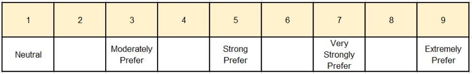
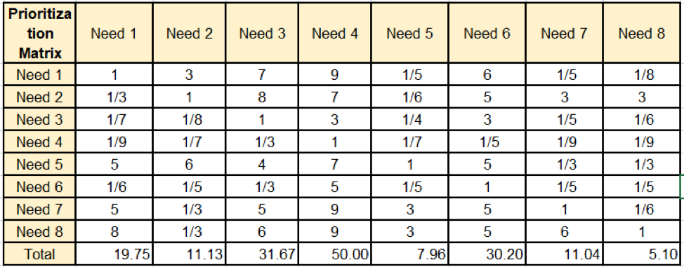
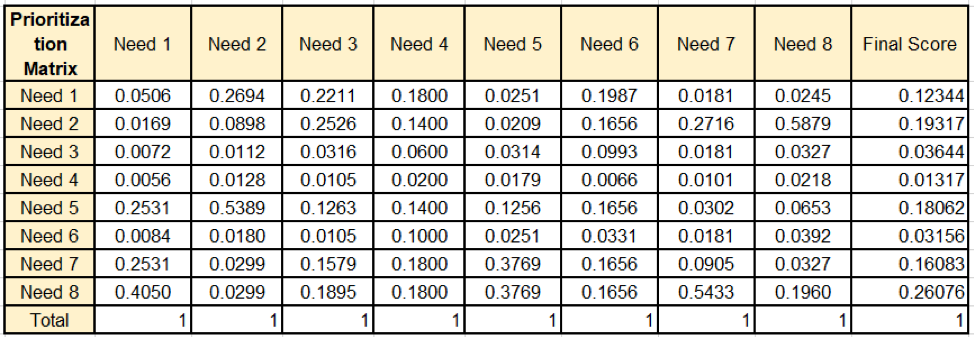
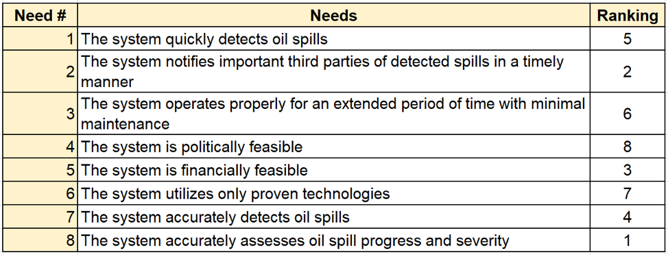
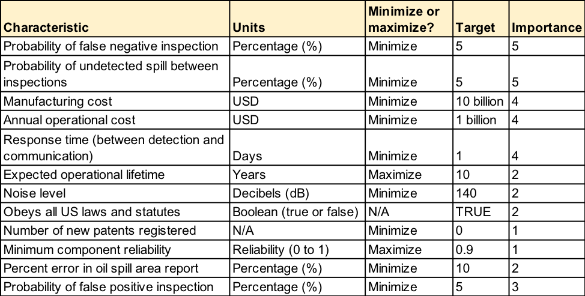

When designing our system, we considered the following stakeholders:
Based on the stakeholder listed above and the functions described in our functional analysis, we devised the following list of needs.
To select a design, a process known as Analytic Hierarchy Process was used. The needs were compared one-on-one and were ranked from the least important to the most important. First, a scale was defined, with 1 being neutral and 9 being extremely prefered.
Each need was then compared with another need, and given a score. For example, Need # 1 is extremely prefered compared to Need # 4.
The columns were added. To standardize the column scores, the values in the columns were divided by the total to make the sum equal to 1, as it can be seen in the table below. By averaging the rows, a final score was determined for each need and ranked. It would appear that Need # 8 takes the most priority and Need # 4 takes the least. Therefore, the need that the system accurately assesses oil spills progress and severity takes precedence over the need that the system is politically feasible.
All the other needs are ranked accordingly, from 1 to 8, with 1 being the most important and 8 being the least.
Based on our needs analysis, we were able to generate a list of specific requirements for our system. Note that a false negative inspection refers to an instance in which the system inspects an area with an oil spill but fails to detect or report the spill, while a false positive inspection refers to an instance in which the system reports an oil spill that is not actually there. Also note that minimum component reliability refers to the reliability of the least-reliable component of the system. Finally, note that Importance is ranked from 1 to 5, with 1 being least important and 5 being most important.
From the requirements table alone it may be unclear exactly how our needs and requirements relate. To make this more clear, we created a House of Quality showing relationships and importance of needs and requirements. We also utilized this House of Quality to consider the performance of other oil-spill-detecting products from competitors. Note that we were not able to directly compare these products to ours as we had not yet generated an actual concept for our system.
The House of Quality is too large and complex to be viewed as anything other than a Microsoft Excel file, but it can be downloaded here.